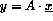

Next: Solution
Up: Alignment using Templates
Previous: Solution
Write a program to calculate the matrix vector product,  , for a user defined size of array. Use
Intrinsics where possible. Do this for:
- a 1D processor array.
- a 2D processor array.
Which would be the best program and why?
Next: Solution
Up: Alignment using Templates
Previous: Solution
Adam Marshall ©University of Liverpool, 1996
Tue Nov 26 17:02:31 GMT 1996